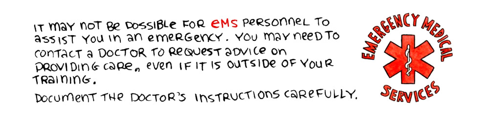
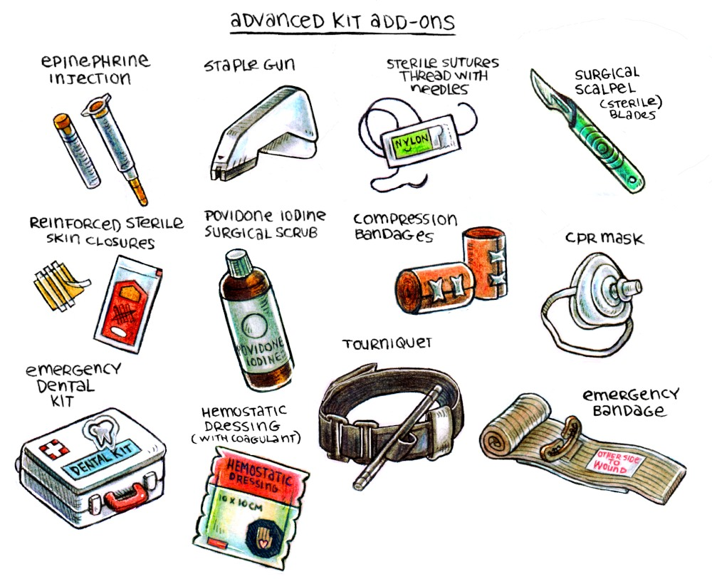

Learn everything you can about fisrt-aid. Knowing what to do in the event of severe bleeding, choking, or severe allergic reaction could save a life.
It may not be possible for EMS personnel to come to assist you in an emergency. You may need to contact a doctor and request advice on providing care, even if it is outside of your training. Document the doctor’s orders carefully.
The word SAMPLE is a useful acrostic mnemonic to remember what to ask a patient prior to treating them:
Signs and symptoms (What hurts? How do you feel?)
Allergies (Do you have known allergies or allergic reactions? What happens? Was there a recent exposure?)
Medications (What medications are you taking? Are the medications over the counter, or prescription? What are the medications for? When did you last take them? Where do you keep your medications?)
Pertinent past medical history (Has this happened before? Are you currently under care for anything by a doctor? If a woman, are you pregnant?)
Last intake and output (When did you last eat/drink? Are you hungry, cold, or tired? When did you last urinate/defecate? Were they normal?)
Events leading up to the injury/illness (What caused the incident? When did it happen? Explain, in chronological order, how it happened)
Clearly mark the first-aid kit with a red cross<, and make sure those sharing the space with you know where it is. Keep a list inside of the items you use, and be sure to top off the kit every year or so.
Basic First-Aid Kit
Sterile gauze pads (dressings) in small and large squares to place over wounds, Medical tape, Roller and triangular bandages to hold dressings in place or to make an arm sling, Adhesive bandages in assorted sizes, Scissors, Tweezers, Safety pins, Instant ice packs, Disposable non-latex gloves(such as surgical or examination gloves), Flashlight(with extra batteries in a separate bag), Antiseptic wipes or soap, Pencil (and sharpie) and pad, Emergency blanket, Eye patch, Thermometer, a first aid manual, burn dressings(with gel), hydration tablets/powder, surgical tape, petrolatum gauze, and hot water bottle.
Basic Medicine Kit
Always read about a medicine before using it. If administering medicine to another person, ask about their allergies, and past medical history, last oral intake etc. Some medicines can cause severe allergic reactions, or may interact with other medicine.
Never administer anything to anyone without their consent.
: ibuprofen, aspirin, antihistamines, anti-nausea meds, ear drops, eye wash, bug spray, hand sanitizer, topical anesthetic, antiobiotic(oral), acetaminophen(paracetamol), sunscreen (SPF 30), aloe vera gel with lidocaine, topical antibiotic(powder & ointment), hydrogen peroxide, anti-diarrheals, laxative, codeine, anti-chafing cream, and antifungal cream.
Advanced add-ons to a medical kit
Staple gun, Epinephrine, Tourniquet, Multitool, Compression bandage, Reinforced sterile skin closures, CPR pocket mask, Povidone iodine surgical scrubs, Sterile sutures thread with needle, an emergency(israeli) bandage, an emergency dental kit, and hemostatic dressings(with coagulant)